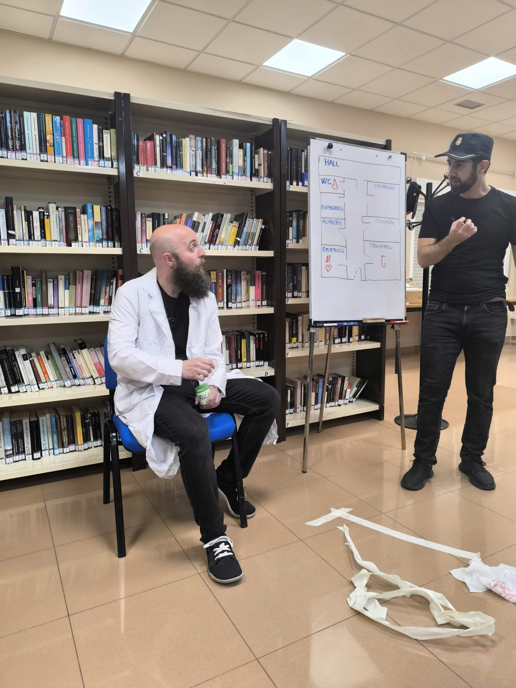
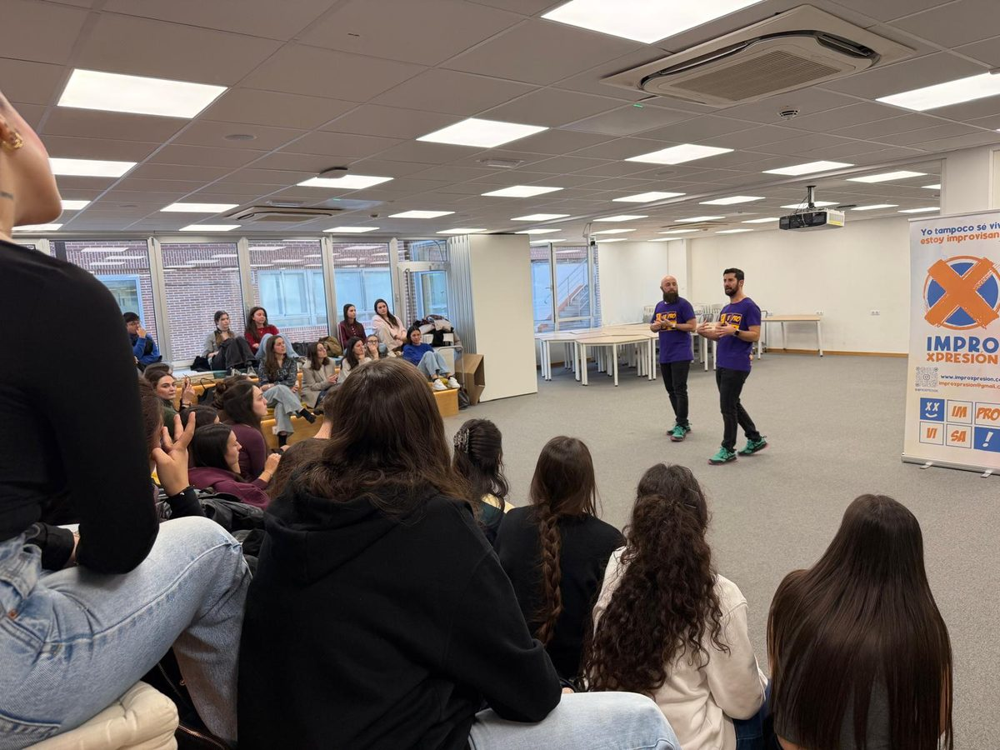
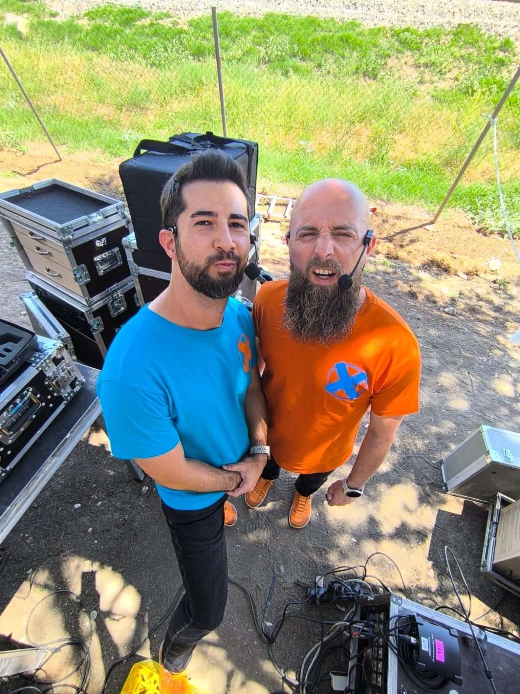
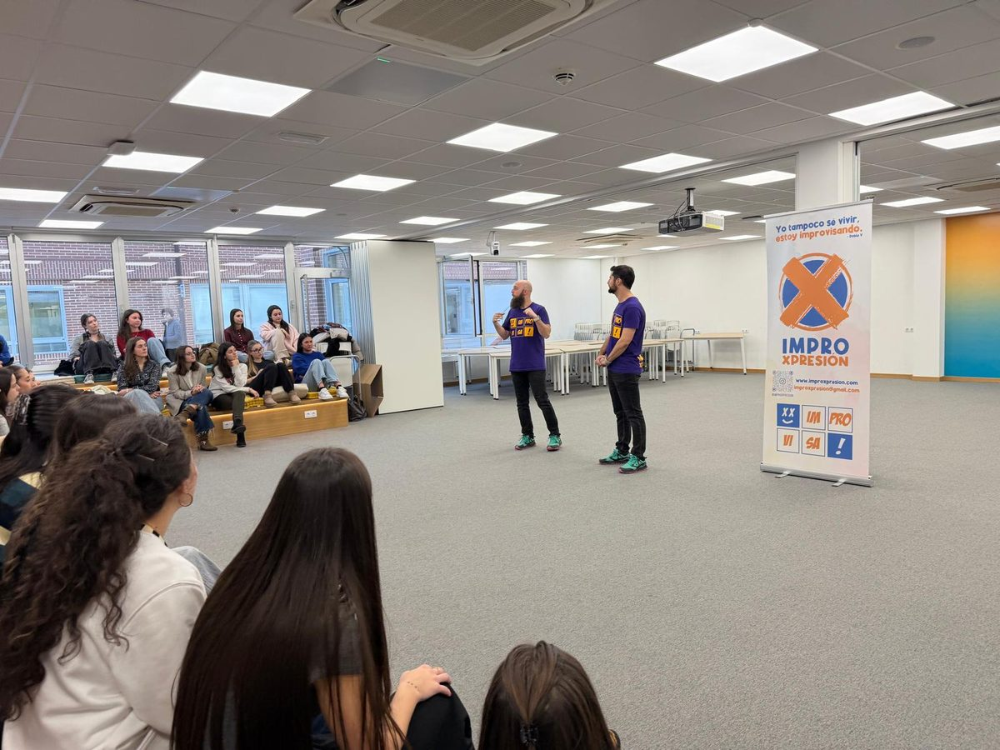

Humor hecho a la medida de tu equipo
Cada empresa tiene su lenguaje, sus anécdotas y su manera de celebrar. Preparamos cada evento con la organización para que el equipo se vea reflejado en escena y cada persona participe a su manera.
Expertos infiltrados
Durante la comida o la reunión, nuestro equipo se presenta como especialistas invitados de tu sector. Conversan, preguntan y escuchan… y cuando llega la revelación, todo lo que han recogido se convierte en escenas de improvisación.

- Personajes creados para tu sector, creíbles desde el primer saludo.
- Nombres, anécdotas y expresiones reales de la comida, convertidos en escenas.
- Una revelación que el equipo comentará durante semanas.
Show de impro a medida
Un espectáculo construido con el universo de tu empresa o de tu sector: palabras clave, anécdotas del año y expresiones de la casa. Escenas breves y dinámicas, con participación voluntaria del público desde su sitio.

- Humor cercano y respetuoso, pensado para tu equipo.
- Participación a la medida de cada persona: dar ideas, votar, responder o subir a escena.
- Funciona en cualquier espacio: comedor, salón, sala de reuniones o auditorio.
Maestros de ceremonias
Recibimos al público, damos paso a las intervenciones, presentamos entregas de premios o diplomas y mantenemos el ritmo del acto de principio a fin. La organización disfruta del evento mientras cuidamos los tiempos, las transiciones y la energía de la sala.

Se combina muy bien con un show de impro como cierre del acto.
Team building con impro
Un taller práctico para reforzar la cohesión del equipo, la escucha, la adaptación y la confianza, con el humor como protagonista. Ideal para jornadas de empresa, convenciones y planes de formación.

Cómo trabajamos
- 1. Hablamos. Nos cuentas la fecha, el lugar, el horario, el número de personas y lo que buscáis.
- 2. Propuesta a medida. En 24–48 horas recibes una propuesta con duración, personalización, necesidades técnicas y presupuesto desglosado.
- 3. Preparación personalizada. Unos días antes recogemos con la organización palabras clave, anécdotas y el tono del evento.
- 4. El gran día. Llegamos con mesa de sonido y micrófonos y nos adaptamos al espacio tal como está.
Preguntas frecuentes
¿Alguien tiene que salir a actuar?
Solo quien quiera. La participación es siempre voluntaria: la mayoría del público juega desde su sitio, dando ideas, votando o respondiendo, y quien se anima, sube a escena.
¿Qué necesitáis a nivel técnico?
Muy poco: altavoces o el equipo de sonido del local. ImproXpresión lleva la mesa de sonido y los micrófonos. Escenario y luces, opcionales.
¿Podéis personalizarlo con nuestra empresa?
Es lo que más nos gusta. Antes del evento recogemos con la organización palabras clave, anécdotas y temas de vuestro sector, y el show se construye sobre ellos.
¿Dónde trabajáis?
Tenemos sede en Illescas (Toledo) y nos desplazamos al lugar de tu evento. El desplazamiento va incluido y desglosado en el presupuesto.